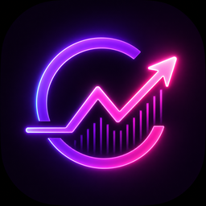

CryptoBeam
Support
CryptoBeam is a read-only cryptocurrency portfolio tracker for Apple devices. If something is not working as expected, the guidance below can help you troubleshoot or contact support.
- macOS
- iOS
- iPadOS
Contact
Email CryptoBeam support at:
To help diagnose an issue, include your platform, CryptoBeam version and build, the affected provider or wallet source, and the exact error wording you see.
Common troubleshooting
- Verify that your device has a working internet connection.
- Refresh the portfolio and allow the refresh to finish.
- Open Settings and confirm that the affected provider credentials are present and current.
- For an exchange connection, confirm that its API key has read-only balance permissions.
- Quit and reopen CryptoBeam, then try the refresh again.
- Use Reset This Device only if you intend to clear this installation's local settings, cached portfolio presentation, downloaded logos, and local-only credentials. It preserves synchronized credentials and wallets, local price history, and the macOS app-owned wallet backup.
If the problem continues, contact support with the details listed above. Do not use Erase Synced & Local Data as a routine troubleshooting step.
Provider access
- Kraken: enable only read/query access needed to view balances, including Query Funds. Never enable withdrawal access for CryptoBeam.
- Coinbase: use view/read-only access.
- All exchanges: CryptoBeam does not need Trade, Transfer, or Withdraw permissions.
Version and build
Open CryptoBeam Settings and look in the About section for the version and build number. Include the complete value shown there when contacting support.
Privacy
CryptoBeam has no analytics, ads, or tracking. For complete details about local storage, iCloud synchronization, provider requests, and deletion controls, read the CryptoBeam Privacy Policy.